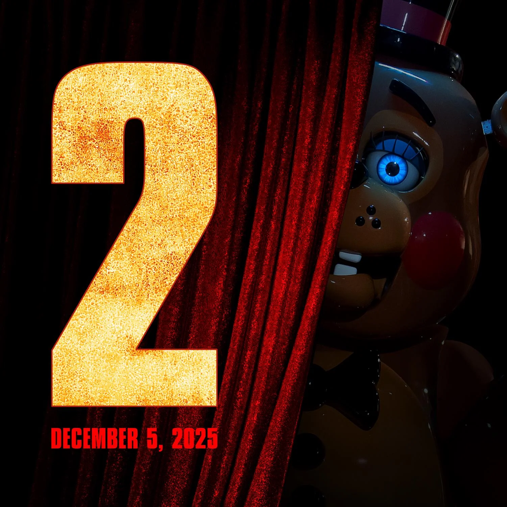
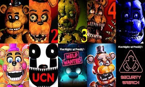

ancora auxiliar:
história / Resumo / criador / jogos / resumo dos jogos
RESUMO
Lançado em 2014, Five Nights at Freddy's é uma franquia de videogame de survival horror em primeira pessoa. Na história, o jogador é um segurança noturno que trabalha na Freddy Fazbear's Pizza, uma pizzaria, com animais animatrônicos que entretêm as crianças de dia e viram criaturas sanguinárias de noite.A trama acontece durante cinco noites no Freddy Fazbear's Pizza, uma pizzaria antiga que usava animatrônicos para divertir as crianças durante o dia. Porém, quando o sol desaparecia, esses robôs se transformavam em terríveis assassinos.
HISTÓRIA
A série Five Nights at Freddy's gira principalmente em torno de uma cadeia de restaurantes familiares sob a propriedade da Fazbear Entertainment, uma empresa fundada por Henry Emily e William Afton. Este último é um engenheiro de robótica que cria uma série de mascotes animatrônicos para entreter os clientes, incluindo Freddy Fazbear, um urso marrom e homônimo da Freddy Fazbear's Pizza, Bonnie, um coelho índigo, Chica, uma galinha amarela, e Foxy, uma raposa pirata vermelha. Outros animatrônicos incluem o Puppet, o fantasmagórico Golden Freddy, o predecessor de Freddy chamado Fredbear, e Circus Baby, a mascote da filial da franquia, o Circus Baby’s Pizza World. William também é um pai negligente e assassino de crianças, escondendo os corpos de suas vítimas dentro dos animatrônicos, que passam a ser habitados por suas almas. Ele projetou especificamente a Circus Baby para ser capaz de assassinar crianças, o que leva à morte acidental de sua própria filha, Elizabeth.
JOGOS
Os jogos principais da franquia seguem uma linha de terror em primeira pessoa, com o jogador geralmente assumindo o papel de um funcionário da noite, sobrevivendo a encontros com animatrônicos. Os primeiros títulos mantêm o estilo clássico de vigilância com câmeras e gestão de energia. A partir de Sister Location, a série introduz maior mobilidade, narrativa guiada e exploração de ambientes. Em Security Breach, a franquia passa a apresentar um mundo aberto com gráficos 3D modernos, marcando uma mudança significativa na jogabilidade. Cada título contribui para a complexa linha do tempo da franquia, revelando elementos novos da história da família Afton, os crimes de William Afton, e o sofrimento das crianças vítimas dos assassinatos.[33][34] Ao longo dos anos, a série ganhou profundidade com minigames, finais secretos, e conteúdo escondido que alimentam inúmeras teorias dos fãs.
| JOGO | LANÇAMENTO | PLATAFORMAS |
|---|---|---|
| FNAF1 | 8 de agosto de 2014 | Windows, Android, iOS, Nintendo Switch, PS4, Xbox One |
| FNAF2 | 10 de novembro de 2014 | Windows, Android, iOS, Nintendo Switch, PS4, Xbox One |
| FNAF3 | 2 de março de 2015 | Windows, Android, iOS, Nintendo Switch, PS4, Xbox One |
| FNAF4 | 23 de julho de 2015 | Windows, Android, iOS, Nintendo Switch, PS4, Xbox One |
| FNAF5 | 7 de outubro de 2016 | Windows, Android, iOS, Nintendo Switch, PS4, Xbox One |
 |
A Pizzaria Freddy Fazbear foi um restaurante popular para crianças e igualmente para adultos. No entanto, inúmeros incidentes - incluindo o sequestro de cinco crianças por um homem vestindo um traje de animatrônico vazio, queixas ao Departamento de Saúde sobre inúmeros relatos de sujeira e "A Mordida de 87" - fizeram a pizzaria cair em tempos difíceis. A Pizzaria Freddy Fazbear foi sancionada a fechar até final do ano, já que potenciais compradores não queriam seus nomes associados ao restaurant |  |
|---|
MAPA INTERATIVO:

RESUMO DOS JOGOS
- Five Nights at Freddy's
- Five Nights at Freddy's 2
- Five Nights at Freddy's 3
- Five Nights at Freddy's 4
- Five Nights at Freddy's: Sister Location (5)
Five Nights at Freddy's é um jogo eletrônico independente de survival horror desenvolvido e publicado por Scott Cawthon. O jogo se passa em uma pizzaria fictícia chamada "Freddy Fazbear's Pizza", onde o jogador assume o papel de um segurança que deve se defender de personagens animatrônicos do restaurante que se tornam móveis e homicidas à noite.
O jogador joga com dois protagonistas: Jeremy Fitzgerald e Fritz Smith, este último somente jogável apenas na sétima noite. Os dois tem as mesmas características e são vigias noturnos na Pizzaria Freddy Fazbear. Apresentam-se onze personagens: Withered Freddy, Withered Bonnie, Withered Chica, Withered Foxy, Withered Golden Freddy, Toy Freddy, Toy Bonnie, Toy Chica, Mangle, Puppet, Balloon Boy e Balloon Girl ou JayJay, além das alucinações: Shadow Freddy e Shadow Bonnie. Ao contrário do primeiro jogo, não há portas para fechar; em vez disso, o jogador deve utilizar uma lanterna ou vestir uma máscara do Freddy para evitar ser morto pelos animatrônicos.
O jogo se passa 30 anos após o fechamento da Pizzaria Freddy Fazbear. O jogador assume o papel de um guarda noturno, cujo nome não é revelado, recém-contratado para trabalhar na Pavores Fazbear, uma atração de terror baseada nos casos não resolvidos da pizzaria, construído com base nos antigos restaurantes dos animatrônicos. O jogador deve monitorar câmeras da ventilação e do local e reparar os danos de áudio, vídeo e ventilação toda vez que eles dão erro, permanecendo no trabalho até a abertura da atração na próxima semana.
O jogo se passa no quarto de uma criança, onde o jogador deve evitar ataques de animatrônicos de pesadelo que a perseguem. Ao contrário dos jogos anteriores da série, o jogador não tem acesso a uma rede de câmeras de segurança para monitorar a progressão dos animatrônicos e, em vez disso, deve confiar em sinais de áudio. Entre as noites, o jogador pode jogar minijogos no estilo Atari que contam a história de um menino que é constantemente atormentado por seu irmão mais velho.
Ambientado em um local irmão da Freddy Fazbear's Pizzeria, chamado Circus Baby's Entertainment and Rental, os jogadores controlam um novo funcionário que deve realizar trabalhos de manutenção enquanto se defende de um grupo de animatrônicos assassinos . A jogabilidade em Sister Location difere significativamente dos jogos Five Nights at Freddy's anteriores , pois concede aos jogadores mobilidade entre salas onde as tarefas são concluídas.
CRIADOR
Scott Braden Cawthon é um desenvolvedor, escritor e produtor americano de videogames. Ele é mais conhecido por criar Five Nights at Freddy's , uma série de jogos de survival horror que se expandiu para uma franquia de mídia.Cawthon começou sua carreira desenvolvendo videogames cristãos para toda a família, com sucesso mínimo. Ele migrou para o terror com o primeiro jogo Five Nights at Freddy's em 2014, que foi um sucesso comercial e conquistou seguidores cult . Cawthon desenvolveu sete jogos da série principal e quatro spin-offs até 2023. Além dos jogos, Cawthon escreveu várias histórias para a franquia, incluindo romances e o roteiro do filme Five Nights at Freddy's (2023), que ele também produziu. Cawthon submeteu Five Nights at Freddy's ao sistema Greenlight do Steam no verão de 2014, lançando um trailer e, mais tarde, uma demo . Ele então o submeteu ao IndieDB , onde ganhou popularidade, e submeteu o jogo uma terceira vez ao Desura . O jogo foi aceito no Greenlight do Steam em agosto de 2014. O jogo foi bem recebido pelos críticos, [ 10 ] e se tornou o assunto de vários vídeos populares de Let's Play no YouTube . Uma sequência, Five Nights at Freddy's 2 , foi lançada mais tarde naquele ano no Steam. Logo após o lançamento de Five Nights at Freddy's 2 , Cawthon removeu todas as informações de seu site pessoal e as substituiu por uma imagem da palavra "offline". Seu site mais tarde começou a mostrar imagens teaser promovendo Five Nights at Freddy's 3 , que foi lançado em março de 2015.